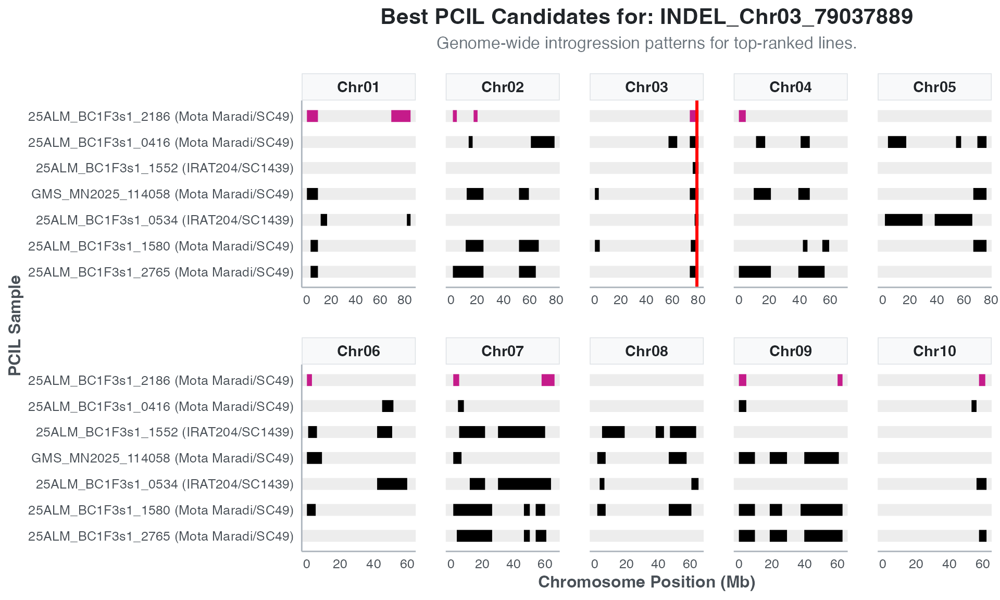

Creates a genome-wide overview plot for each target region, visualizing the introgression patterns of the top-ranked Pangenome-Characterized Introgression Lines (PCILs) identified by `fetch_pcil_positive()`.
Value
A list of ggplot objects. Each plot corresponds to a unique target region and displays the introgression segments for the best candidate lines across all chromosomes.
Examples
# \donttest{
library(panGenomeBreedr)
# 1. Fetch data and find positive lines
pcil_data <- fetch_pcil_data(connect_db_mode = "online")
selection <- c("INDEL_Chr03_79037889", "SNP_Chr03_79037855")
variant_geno_sel <- fetch_genotypes_by_id(variant_ids = selection, connect_db_mode = "online")
fam_results <- fetch_pcil_families_by_variant(
selection = selection,
pcil_data = pcil_data,
connect_db_mode = "online"
)
pcil_pos_pcv <- fetch_pcil_positive(
pcil_data = pcil_data,
variants_select_geno = variant_geno_sel,
type = "position",
sel = 15,
available_ids = fam_results$pcil_summary[, c("sample_id", "selection")],
result_pcil_families = fam_results,
window = 0
)
#> Using +/- 0 bp window around positions
# 2. Plot the best candidate lines genome-wide
best_line_plots <- plot_pcil_best_lines(
pcil_positive_result = pcil_pos_pcv,
pcil_data = pcil_data
)
if (length(best_line_plots) > 0) {
print(best_line_plots[[1]])
}

# }